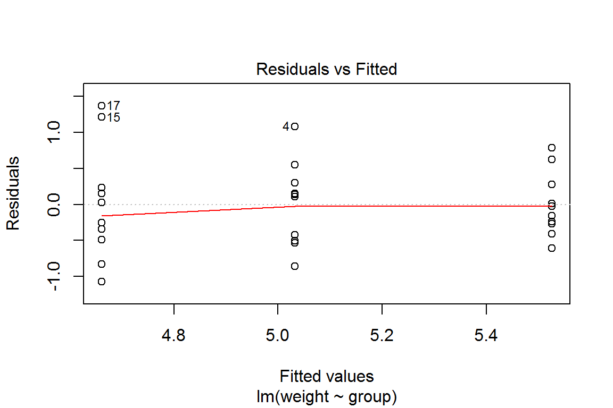
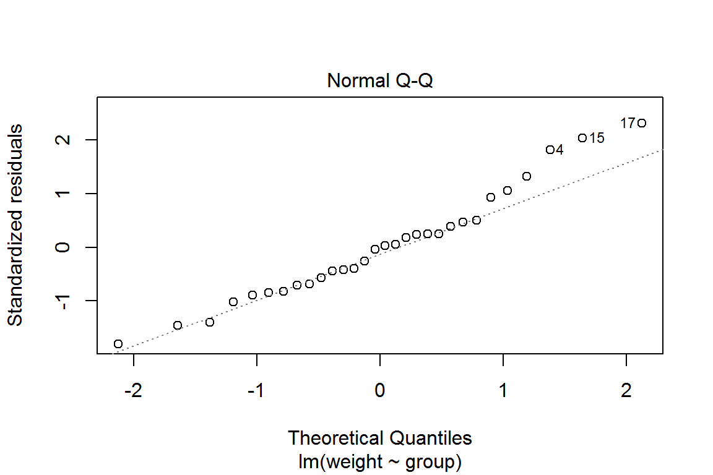
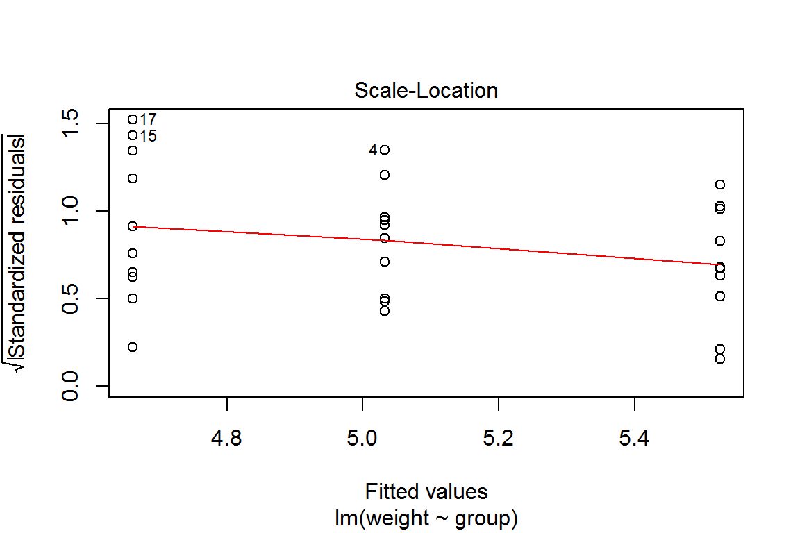
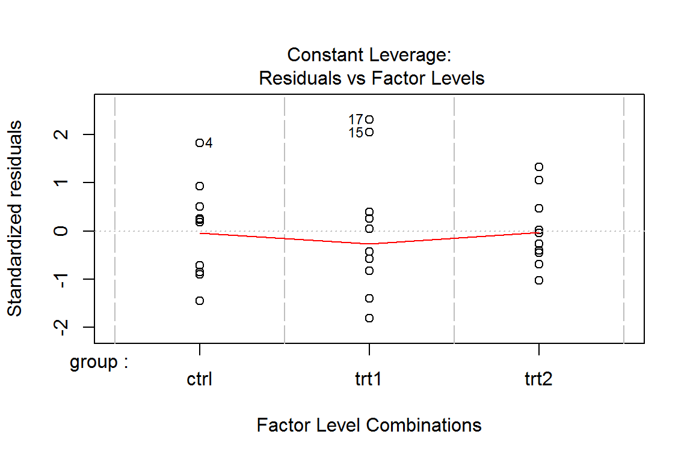

The purpose of this tutorial is to give a brief, coherent introduction to analysis of variance (ANOVA) and give you a worked example that you can use as a template for future analyses.
Last week we talked about how to compare the means of two groups to determine whether or not the sample distributions came from the same statistical population. But what do we do if we want to compare three groups?? ANOVA.
We use ANOVA when we would like to test the effect of one or more grouping variables on a continuous response. We generally tend to reserve ANOVA for those cases in which the grouping variable has more than two levels. To clarify, if we wished to test differences in the response between only two groups (e.g. male and female) then we would use a t-test or a Wilcoxon rank-sum test. If we wished to extend that to include three or more groups (e.g., treatment 1, treatment 2, and control) we would use an ANOVA or a non-parametric alternative.
In R, ANOVA and all other linear models that we will discuss this week are fit using the lm function. Let’s have a look:
str(lm)
## function (formula, data, subset, weights, na.action, method = "qr",
## model = TRUE, x = FALSE, y = FALSE, qr = TRUE, singular.ok = TRUE,
## contrasts = NULL, offset, ...)This shows us that lm is a function. It takes a number of arguments, but the ones that will concern us in this course are formula and data. The formula argument needs to be specified as a mathematical formula, and takes the following form:
\(y \sim x_1 + x_2, ..., + x_k\)
where \(y\) is the name of our response variable, and each \(x\) is the name of an explanatory variable that we wish to include in our example.
The data argument is optional, but is usually a dataframe that holds our data.
Let’s walk through a quick example of what this looks like using the PlantGrowth dataset in R. We’ll just go through the steps here and explain it in the next section.
# Load the data
data("PlantGrowth")
# Look at the first few lines of it
head(PlantGrowth)
## weight group
## 1 4.17 ctrl
## 2 5.58 ctrl
## 3 5.18 ctrl
## 4 6.11 ctrl
## 5 4.50 ctrl
## 6 4.61 ctrl
# Examine the data structure
str(PlantGrowth)
## 'data.frame': 30 obs. of 2 variables:
## $ weight: num 4.17 5.58 5.18 6.11 4.5 4.61 5.17 4.53 5.33 5.14 ...
## $ group : Factor w/ 3 levels "ctrl","trt1",..: 1 1 1 1 1 1 1 1 1 1 ...
# Fit an ANOVA to the data and store it as an object
plant_model = lm(weight~group, data=PlantGrowth)
# Check the model diagnostics to make sure we haven't blown any assumptions
# too badly and to make sure the model fit is reasonable before we start to
# put any stock into the results
plot(plant_model) 
# Now print the anova table. Note that when we have grouping variables like this
# we need to use the `anova` function to get factor-level statistics like these:
anova(plant_model)
## Analysis of Variance Table
##
## Response: weight
## Df Sum Sq Mean Sq F value Pr(>F)
## group 2 3.7663 1.8832 4.8461 0.01591 *
## Residuals 27 10.4921 0.3886
## ---
## Signif. codes: 0 '***' 0.001 '**' 0.01 '*' 0.05 '.' 0.1 ' ' 1
# Summarize the model, look at the coefficients, standard errors, and R-squared
summary(plant_model)
##
## Call:
## lm(formula = weight ~ group, data = PlantGrowth)
##
## Residuals:
## Min 1Q Median 3Q Max
## -1.0710 -0.4180 -0.0060 0.2627 1.3690
##
## Coefficients:
## Estimate Std. Error t value Pr(>|t|)
## (Intercept) 5.0320 0.1971 25.527 <2e-16 ***
## grouptrt1 -0.3710 0.2788 -1.331 0.1944
## grouptrt2 0.4940 0.2788 1.772 0.0877 .
## ---
## Signif. codes: 0 '***' 0.001 '**' 0.01 '*' 0.05 '.' 0.1 ' ' 1
##
## Residual standard error: 0.6234 on 27 degrees of freedom
## Multiple R-squared: 0.2641, Adjusted R-squared: 0.2096
## F-statistic: 4.846 on 2 and 27 DF, p-value: 0.01591That’s all there is to it!
Okay, now that we have all of this neat output, what does it all mean? Let’s go through it all step by step.
1) The first thing we did was fit the model with the lm function. This not only ran the model, but it stored the model as an object in R so we could run diagnostics and summarize our results.
2) Next, we used the plot function to look at some model diagnostics. The first plot showed us the residuals vs the fitted values. What we are looking for here is to make sure that there are no obvious patterns in the residuals with respect to the fitted values. Everything looks okay here for now.
The second plot is also very important. If all is well in the model fit, the q-q plot should look like a diagonal line with points falling more-or-less on the line. In this case, it is not perfect, but we are probably okay.
The third plot is a check to see if the residuals change with x (like the first) based on a square-root transform. Although we see a slight trend here, probably not anything to worry about.
Finally, the last plot shows the leverage exerted by individual points. Some points far out on the ends of the data or outliers can exert undue influence on the fit of a line. In the case of this diagnostic and the Cook's D we usually like to see all or a large majority of the points falling between -3 and 3 on the y-axis. So, this diagnostic checks out as well.
3) After we actually check our assumptions and model fit, we can look at the results of the model. First, we calculate the ANOVA table for the fitted model using the aptly named anova function in R. This function gives us the standard ANOVA table showing sums of squares and mean squared errors for our grouping variable(s) and the model residuals (unexplained variance). The anova function also gives us the F-statistic for our group effects and the p-value associated with that. Note that this kind of summary is the only way to obtain such a value. Note that we can calculate the R-squared directly from this table as:
\[R^2 = \frac{SSB}{SSB + SSR}\]
\(\\\)
\[R^2 = \frac{3.7663}{3.7663+10.49291}\]
\(\\\)
\[R^2 = 0.264131\]
4) That’s really all we need to report for a one-way ANOVA, but we can get some of this info from the model using summary as well. For instance, note that summary(plant_model) also returns an R-sqaured value if you forget the calculation. It is identical to ours.
Here is a quick mock-up of what this might look like in the methods and results section of a (bad) paper:
Data analysis
We used one-way analysis of variance (ANOVA) to test the effects of treatment group (trt1, trt2, and ctrl) on the mass of plants (g). The null hypothesis for this test was that all group means were equal: \(H_0: \mu_1= \mu_2 = \mu_3\). We examined diagnostic plots to assess assumptions of normality in the residuals, verify homoscedasticity of errors, and determine the presence of influential observations in the data.
We determined differences between group means using a Tukey-Kramer pairwise comparison of means to control for Type-I error rates. All tests assumed a Type-I error rate of \(\alpha\) = 0.05, and statistical significance was inferred at p < 0.05.
Mass of plants varied significantly between treatment groups (ANOVA, F = 4.846, df1 = 2, df2 = 27, p = 0.016; Table 1). The differences between groups explained about 26% of the variation in mass (R2 = 0.26). The mass of plants in the trt2 group (5.5 \(\pm\) 0.4 g) was significantly greater than plants in the trt1 group (4.7 \(\pm\) 0.8 g) in this study (Tukey HSD, p = 0.012; Fig. 1). We failed to detect differences in mass between plants in the control group (5.0 \(\pm\) 0.6 g) and trt1 (p = 0.39) or trt2 (p = 0.20).
This work is licensed under a Creative Commons Attribution 4.0 International License.